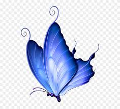

CURSO DE CYBERPEDAGOGIA 2022 - UFABC
EMEB PROFESSOR NILO CAMPOS GOMES - SBC
Alunas: Andrea Alves dos Santos e Patrícia Pereira Ouchida
<i>Diário de Bordo digital
Iniciamos o curso de Cyberpedagogia em Maio de 2022 com muitas expectativas de conhecer do zero todo o funcionamento e conseguir aplicar o conhecimento com os alunos ainda este ano. Nos deparamos com algumas dificuldades tecnológicas, porém, por enquanto, nada que nos desanime e nos faça desistir de nosso objetivo. A seguir, o início de nosso projeto:
Conheça o Blog da nossa escola:
BLOG EMEB PROFESSOR NILO CAMPOS GOMES
Escolhemos o ícone abaixo. A borboleta representa a metamorfose, a transformação e constante evolução, além de espalhar coisas boas por onde passa. Esse é o nosso desejo como professoras formadoras de mentes.

1º Projeto: Nossos componentes
Em um mundo tecnológico, existem diversos seres, chamados de peças, assim como o nosso mundo. Nele, cada um tem uma função, mas com uma condição: só conseguem construir e fazer algo funcionar juntos, sozinhos não servem para nada. Porém, não sabiam ser empáticos, se colocar no lugar do outro, e por isso não se davam bem.
De um lado do mundo, havia uma peça pequena chamada RESISTOR  que tinha várias faixas coloridas pintadas. Próximo dele, morava uma peça um pouco maior, o BUZZER
que tinha várias faixas coloridas pintadas. Próximo dele, morava uma peça um pouco maior, o BUZZER  . Ele era inglês e havia chegado de um outro lugar do mundo. Seu nome traduzido para a língua regional é CAMPAINHA. Mais a frente, morava uma família chamada FIOS
. Ele era inglês e havia chegado de um outro lugar do mundo. Seu nome traduzido para a língua regional é CAMPAINHA. Mais a frente, morava uma família chamada FIOS  . A família tinha uma habilidade de se ligar uns aos outros, mas ainda não sabiam o porquê dessa habilidade. Um pouco mais longe moravam umas PILHAS
. A família tinha uma habilidade de se ligar uns aos outros, mas ainda não sabiam o porquê dessa habilidade. Um pouco mais longe moravam umas PILHAS  que tinham a habilidade de fornecer energia. Elas tinham tanta energia para dar que não conseguiam ficar quietas, mas não sabiam o que fazer com tanta energia. Mais abaixo, após o Monte Hardware, morava uma família com uma aparência bem chamativa: todos eram cabeçudos e de cores diferentes. A família dos LEDS
que tinham a habilidade de fornecer energia. Elas tinham tanta energia para dar que não conseguiam ficar quietas, mas não sabiam o que fazer com tanta energia. Mais abaixo, após o Monte Hardware, morava uma família com uma aparência bem chamativa: todos eram cabeçudos e de cores diferentes. A família dos LEDS  ainda não haviam percebido que também tinham uma habilidade: eles brilhavam. Mas como ainda não conheciam as outras peças, se sentiam inúteis... Continua...
ainda não haviam percebido que também tinham uma habilidade: eles brilhavam. Mas como ainda não conheciam as outras peças, se sentiam inúteis... Continua...
Aguardem os próximos capítulos. Será que os LEDS vão encontram sua missão neste mundo? Será que aparecerá alguém que mostre o que é EMPATIA e faça as peças se unirem?